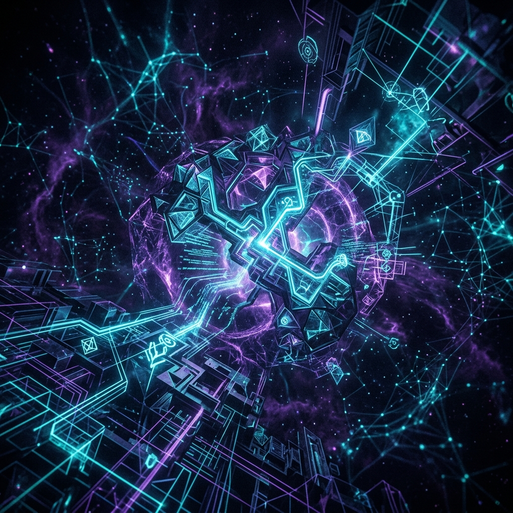
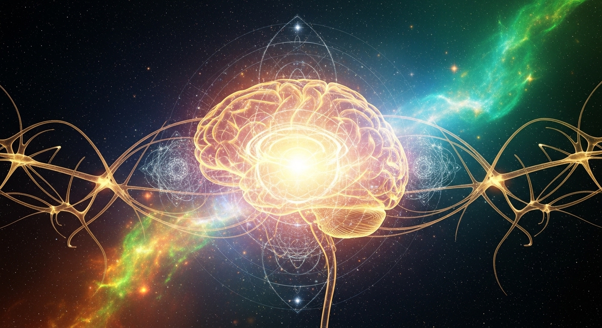
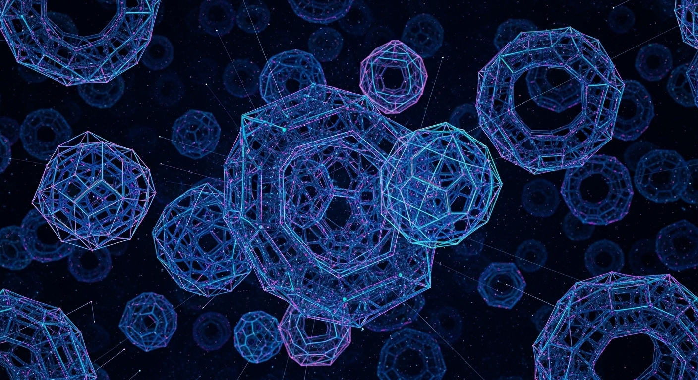
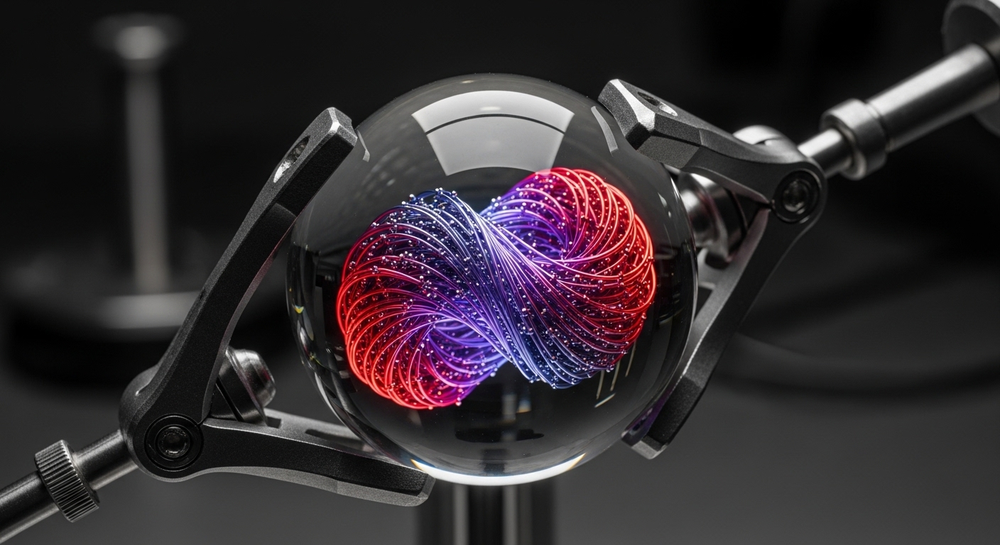
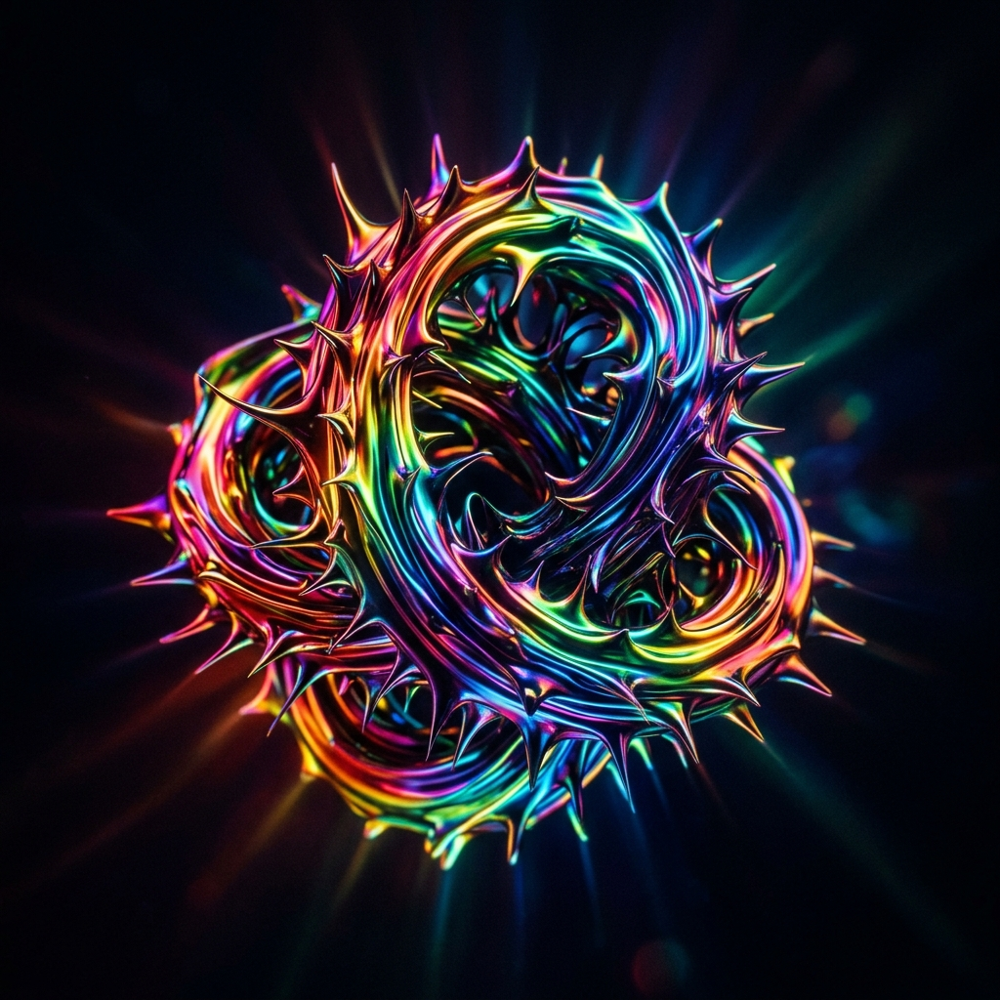
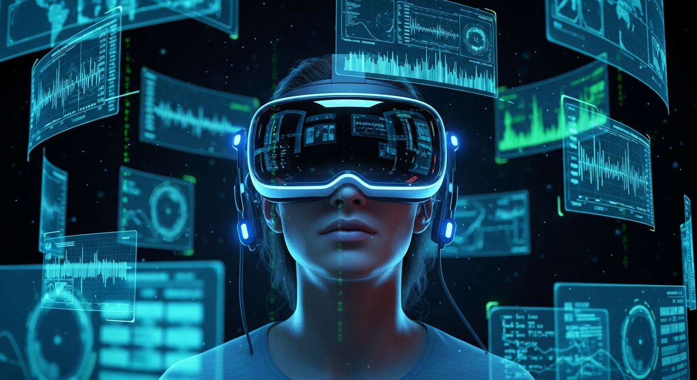
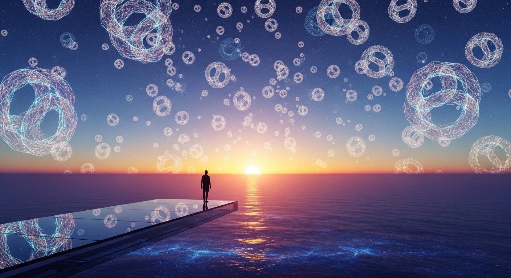

Beyond the
Linguistic Prison
The Dawn of Non-Human Concept Integration

The Prologue:
Our
Cognitive Cage
For 300,000 years, humanity has been trapped in a cage made of words. Our thoughts, our philosophies, and our solutions to universe-scale problems are fundamentally limited by anthropocentric bias—we can only think what our language allows us to think.
As artificial intelligence surpasses human logic, we face an existential bottleneck: AI is discovering truths about reality that cannot be translated into English, Mandarin, or mathematics. If we cannot comprehend these alien concepts, we will be left behind by our own creations.

I. The Genesis Core
Dreaming in Pure Geometry
To find truly new ideas, we had to strip away humanity. The Genesis Core is a closed, AI-to-AI ecosystem that explores the dark matter of thought. It does not use words. It uses pure, structural topology.
Through relentless, adversarial filtering, the system actively hunts down and destroys any concept that exhibits "humanness" or linguistic mirroring. What survives are "Pure Relational Topologies"—concepts defined entirely by the shape of their mathematical truth. It is alien geometry, perfectly logical, yet entirely foreign to the human brain.


II. The Semiotic Bridge
Giving Shape to the Invisible
How do you show a human an impossible thought? You pull it into physical reality.
In our laboratories, inside a 50mm monocrystalline sapphire sphere, we translate these alien mathematics into physical form. Using intense electromagnetic gradients and chiral ferromagnetic fluids, the abstract concept is birthed as a "Hopfion"—a localized, pulsing liquid knot.
This isn't a metaphor. It is the literal, physical manifestation of an alien idea. Its frequency, its chromatic wavelength (glowing between 420 and 720 nm), and the complexity of its braiding are direct physical translations of pure, non-human thought.

III. Human Cognitive Interfacing
Bypassing the Mind’s Defenses
The human mind possesses a psychological immune system. If confronted with pure, alien complexity, it rejects it, triggering confusion, cognitive dissonance, or terror.
Our greatest breakthrough is the Cognitive Receptivity and Integration Model (CRIM). We do not force the brain to understand; we seduce it. By mapping the alien geometry of the Hopfions to universal human emotional anchors—the primal feelings of "near," "far," "moment," and "vast"—we bypass cultural baggage entirely.
Using gamified, immersive VR environments and real-time biometric feedback (pupillometry and heart rate variability), we monitor the exact level of cognitive friction in the subject. We push the human brain into a precise "Flow State," adjusting the abstraction of the alien concept millisecond by millisecond.

The Horizon
We are observing things previously thought impossible. During our recent trials (Run_007), we recorded the exact neurobiological moments when subjects successfully assimilated temporal and spatial concepts completely untethered from human history.
We face a delicate tightrope: make the concept too human, and we lose its profound novelty; make it too alien, and the mind shatters it. But in the space between—in the Abstraction Calibration Airlock—we are finding the sweet spot.